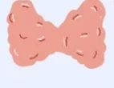

Interactive · Project 03
Most of us have one, yet I had no idea what actually happens day to day. Menstruation is rare among mammals: only humans and some other primates, a few bats, elephant shrews and the spiny mouse are known to menstruate.10,11 The mice and rats used in most preclinical studies do not. Understanding this cycle is essential if we want to design the next generation of drugs and materials for women.
Drag the dot, tap the ring or a phase, or use the arrow keys.
Brain

Thyroid
Educational only, not medical advice. Hormone curves are relative and show a textbook 28-day cycle. Effects and risks are patterns reported in research; everyone is different and much of the evidence is still mixed. Illustrations by Alexandra L. Ramos Figueroa.
References